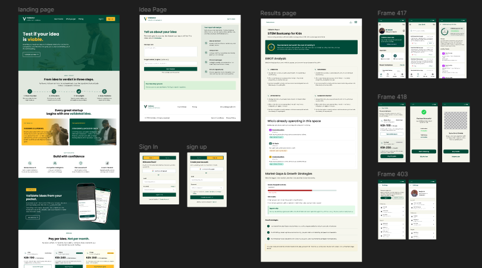
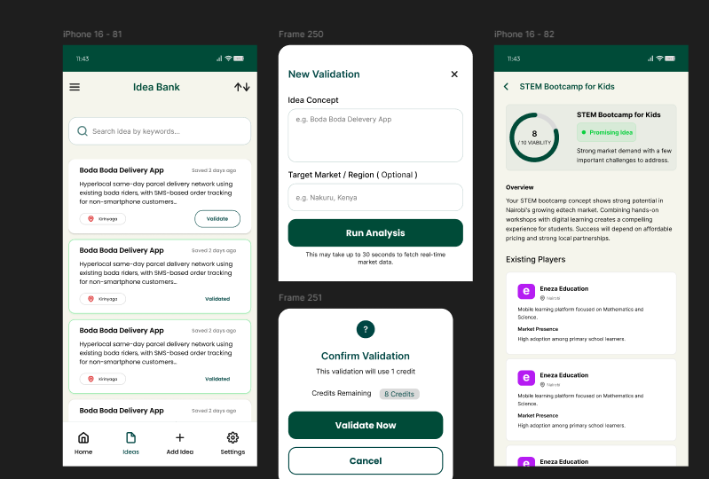
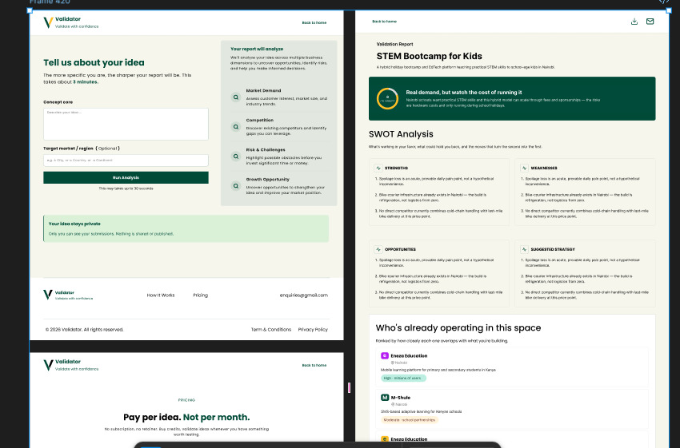
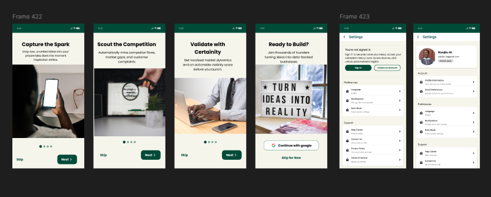
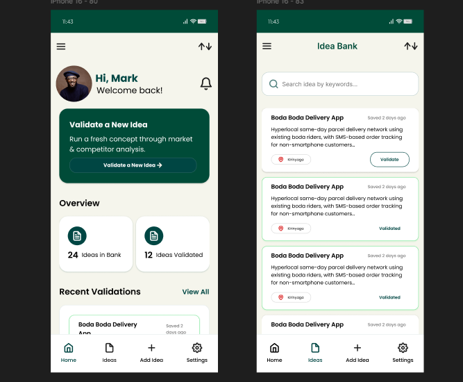
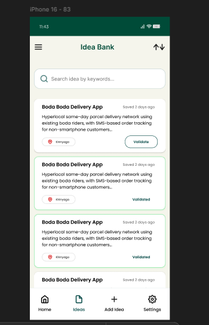
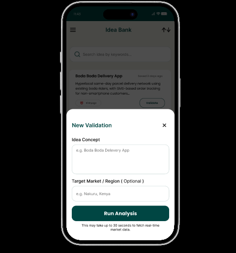
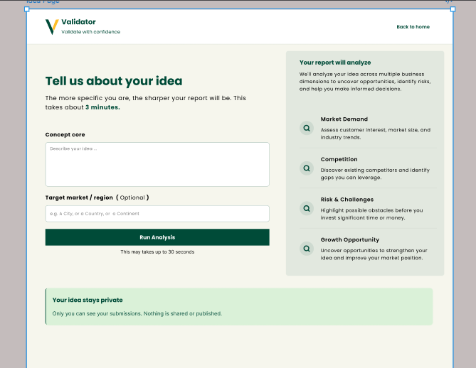
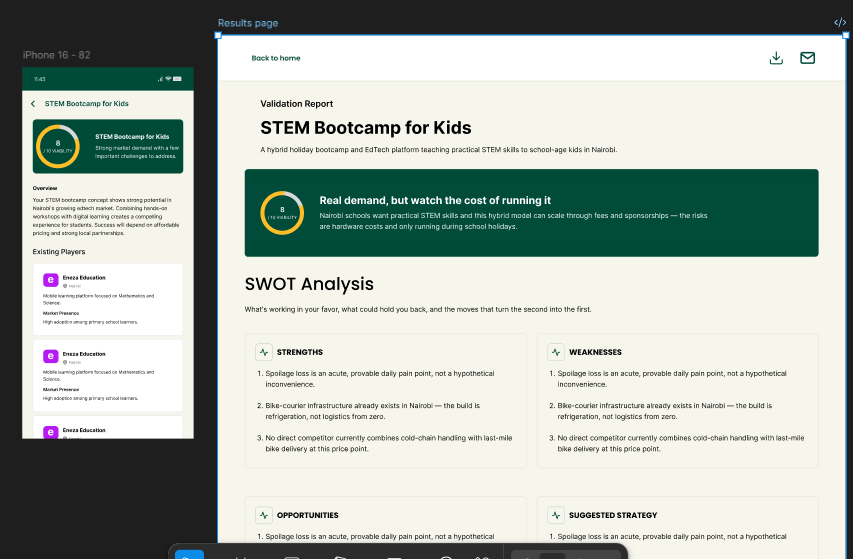

Ideas are easy to create
Entrepreneurs can generate dozens of ideas but often lack a structured way to evaluate them.
02
Designing a product that helps founders decide whether an idea is worth building.
Validator transforms an untested business idea into a structured market validation report using competitor intelligence, customer sentiment, market gaps and localized insights.

Validator is a cross-platform product designed for founders, entrepreneurs and aspiring business owners who want to test an idea before investing significant time and resources into building it.
The product is available as both a mobile app and a web application. Both platforms provide the same core validation experience and produce the same structured validation report.
On mobile, users can capture raw ideas, organize them in an Idea Bank and run a structured validation process. On the website, users enter their idea directly into the validation flow without the Idea Bank step.
Once an idea enters validation, both platforms converge into the same experience — bringing together localized market dynamics, competitor intelligence, customer sentiment, identified market gaps and strategic recommendations.
I worked on the product experience across mobile and web in collaboration with an Android developer, translating the product concept and backend data into an understandable, actionable interface.
Validator was designed as one connected product rather than two separate experiences. The mobile app and website share the same validation logic, information structure, terminology and final output.
The main difference is how users begin. Mobile users can save ideas in the Idea Bank before choosing one to validate, while website users enter an idea and move directly into validation.
After validation begins, both experiences follow the same journey and deliver the same validation report.


THE FOUNDERS' DILEMMA
Entrepreneurs can generate dozens of ideas but often lack a structured way to evaluate them.
Competitors, customer complaints, market information and trends often live across different sources.
A business idea that works in one market may behave very differently in another.
Founders need useful signals before committing development time, money and resources.
"What if founders could test the strength of an idea before they commit themselves to building it?"
Existing tools can help users generate business ideas, write business plans or conduct individual pieces of research.
Validator approaches the problem from a different direction.
The central experience is not simply "generate an idea." It is:
The goal is to help users answer a more valuable question:
"Is this idea worth pursuing, and if so, how should I approach it?"
PRODUCT POSITIONING
Instead of treating the market as a generic global audience, Validator allows users to define a target region such as Nairobi, Kenya.
The product looks beyond competitor names and surfaces weaknesses, engagement signals and customer pain points.
Customer complaints and sentiment are turned into evidence that can reveal opportunities in the market.
The report does not stop at a score. It translates findings into strategies the founder can act on.
Mobile users can capture ideas before they are ready to validate, creating a personal repository of opportunities.
The interface is designed around helping users understand evidence and decide what to do next.
People with business ideas who need help understanding whether an opportunity is worth pursuing.
Business owners exploring a new product, market or business model.
Teams that want early evidence before committing development resources.
People evaluating opportunities through structured research rather than intuition alone.
Founders who need market information relevant to a specific geographic context.
Users constantly capturing ideas and looking for the next opportunity worth investigating.
I owned the end-to-end UI/UX design across mobile and web translating the provided product spec and backend data structure into an interface, then working with the Android developer to shape decisions the spec didn't already answer.
The mobile app adds an Idea Bank where users can save and organize ideas before choosing one to validate. The website removes that step and takes users directly into validation. Once validation starts, both platforms follow the same product logic and produce the same report.
FIRST IMPRESSION

Introduces the Idea Bank as a private place to capture raw ideas the moment inspiration happens.
Communicates that Validator goes beyond the user's own assumptions by examining competitor weaknesses and market gaps.
Introduces localized market intelligence and the viability score.
Transitions from product value to the account and authentication experience.
The home screen acts as the user's command center.
Instead of filling the screen with analytics, the design prioritizes the primary action: validating a new idea.
Supporting information such as Idea Bank size and recent validation reports provides context without competing with the main action.

The Idea Bank is a mobile-specific feature designed to help users capture and organize business ideas before deciding which one to validate.
Ideas can remain available until the user is ready to move one into the shared validation process.

SHARED VALIDATION EXPERIENCE
Whether users arrive from the mobile Idea Bank or enter an idea directly on the website, the validation process follows the same structure.
The experience captures four important dimensions:
The structured flow keeps the experience focused while giving the validation engine the context it needs to generate the report.


A CHALLENGE WE HAD TO RESOLVE
This wasn't simply a visual or checkout decision. The Android developer helped clarify the technical and business implications of generating a report before payment.
Because the validation process can require real-time market research and backend processing, generating a report has an actual cost. Requiring payment first creates a stronger connection between the paid action and the resource-intensive analysis.
THE MOMENT OF VALUE

The results experience transforms structured backend data into a visual report covering viability, SWOT analysis, competitors, customer sentiment, market vulnerabilities and strategic opportunities. The same core results and validation output are available across mobile and web.
One of the interesting parts of the project was working with the backend response structure.
Instead of designing arbitrary dashboard components, I mapped the available data into visual blocks that communicate different levels of information.
The viability score becomes the first visual anchor on the results page across both mobile and web.
In the supplied example backend response, the STEM bootcamp idea received a score of 7/10.
The score is not presented as the entire answer. It is an entry point into the evidence behind the assessment.
SWOT information can become difficult to understand when presented as a long text response.
I structured the information into four distinct visual zones so users can compare strengths, weaknesses, opportunities and strategies quickly.
EXISTING PLAYERS
Mobile-based learning platform for maths and science.
Kenya · High engagementSMS and app-driven personalized learning.
Nairobi · Strong public-school presenceTHE HIGHLIGHT
Negative sentiment around pricing
A founder may validate dozens of ideas over time.
The History screen allows users to return to previous reports without repeating the analysis.
Filters for industry, region and score make the archive useful as the number of reports grows.
Settings brings together account, subscription, privacy and support functionality.
Validator was not designed in isolation. I collaborated with the Android developer to understand how the product would actually behave.
Discussions included backend responses, local report caching, the Room database, report generation time, authentication, payment flow and platform-specific interactions.
Designing the website alongside the mobile product also required maintaining a consistent validation experience while adapting the interface to each platform.
This changed how I approached the interface. Instead of designing screens first and asking engineering to figure everything out later, I considered the relationship between the interface, data and technical implementation.
PRODUCT THINKING
Complex validation information is broken into digestible sections instead of presenting one overwhelming report.
The dashboard prioritizes "Validate a New Idea" because that is the product's primary value-generating action.
Recommendations are presented after competitors, sentiment and market gaps so users can understand the reasoning.
Users see the most important insight first and can continue deeper into the report when they need more detail.
The viability score, opportunity callouts and pain points make the product's value immediately visible.
Because users are making business decisions from the report, the interface needs to feel structured, transparent and credible.
The backend response contained multiple layers of information. The challenge was deciding what should be prominent and what should remain secondary.
A validation report cannot guarantee business success. The interface therefore needed to communicate insight without presenting the score as an absolute truth.
Requiring payment before report generation protects the product's economics but adds friction to the user journey.
The mobile app and website needed to feel like one product while supporting their different entry points.
THE DESIGN WAS NOT LINEAR
The design translated Validator's product concept and backend data model into a connected mobile and web experience. The mobile app gives users an Idea Bank for capturing and organizing ideas, while the website takes users directly into validation. From that point, both platforms provide the same validation journey, evidence, analysis and structured report.
This case study documents my product and UX/UI design contribution across the Validator mobile app and web application. Implementation details may evolve as the product continues to develop.
WHAT I LEARNED
Validator pushed me to think beyond individual interfaces.
I had to think about what information users actually needed, how complex backend data could become understandable, how the product creates value and how technical constraints affect the experience.
Designing Validator across mobile and web also taught me that cross-platform design is not about creating two different products. It is about maintaining the same core product logic and experience while adapting the entry point to each platform.
In Validator, the mobile app adds the Idea Bank as a place to capture and organize ideas. The website removes that step and takes users directly into validation.
Once validation begins, the experience converges into the same evidence, analysis, scoring and final report.
One of the biggest lessons came from discussing the payment decision with the Android developer.
Product design is not just about making the interface easy to use. It is about making the product make sense.
The decision to require payment before report generation showed me that UX exists inside a larger system. User expectations, business economics, backend processing, trust and technical feasibility all influence the final experience.
Validator helped me move from thinking primarily as a UI designer toward thinking more like a product designer.